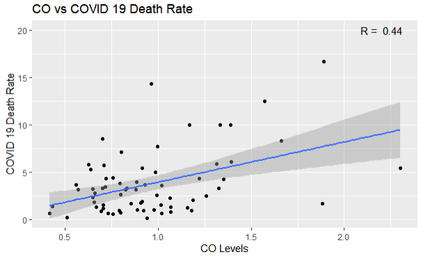

After performing data analysis to find out if there is a potential relationship between COVID 19 and air pollution across the US, we decided to conduct similar analysis across China. We have collected China's covid 19 data from February to October 2020 and the country's air pollution data in the same period.
With the data available, we made four scatterplots to find out if there are positive correlations between Covid 19 death rate in China and each of the three major pollutants (i.e. particle pollution (PM2.5 and PM10), carbon monoxide, and sulfur dioxide).
The results are shown below:
PM2.5 vs Covid 19 Death Rate

PM10 vs Covid 19 Death Rate

CO vs Covid 19 Death Rate
SO2 vs Covid 19 Death Rate

Contrary to our initial expectation, there is a weak positive correlation between PM2.5 and covid 19 death rate, with the correlation coefficient of 0.05. Similarly, the correlation coefficient between PM10 and covid 19 death rate is 0.16, which is still not a strong correlation. However, the correlation between CO and covid 19 death rate, and that between SO2 and covid 19 death rate are relatively strong and positive, with the correlation coefficients of 0.44 and 0.55, respectively.
Since the correlation between SO2 and covid 19 death rate was the strongest, we decided to further visualize both SO2 and covid 19 death rate using the heat map of China.
The visualizations are shown below:
I will do this in SPRINT 2
Go back to the main page